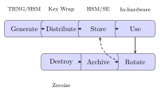
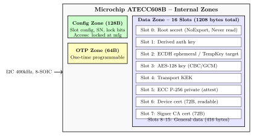

Chapter 19: Secure Key Management¶
19.1 Introduction¶
Secure key management addresses the complete lifecycle of cryptographic keys: generation, storage, distribution, rotation, and destruction. Hardware-based key management ensures keys are never exposed in plaintext. Enterprise deployments combine HSMs, cloud KMS services, and dedicated secure elements to meet NIST SP 800-57, PCI-DSS, and FIPS 140-3 compliance.
19.2 Key Lifecycle Diagram¶

19.3 ATECC608B Internal Zone Diagram¶

19.4 Key Storage in Hardware¶
19.4.1 OTP eFUSE and BBRAM¶
Xilinx UltraScale+ BBRAM holds a 256-bit AES bitstream key in battery-backed CMOS SRAM with approximately 10-year battery life (CR2032). eFUSE provides 256+256 bits of permanent OTP storage; readback can be disabled by a lock fuse. Key loading uses JTAG or a dedicated SPI port via the XilSKey library. NXP LPC55S69: PUF-based key generation, flash key store, PSA Level 2. STM32L5: TZEN with secure key storage, CC EAL5+. TI CC2652: hardware-access- controlled secure flash zone for BLE/Zigbee IoT.
// NXP i.MX: eFUSE key programming (IRREVERSIBLE)
#include "otp_api.h"
for (int i = 0; i < 8; i++)
otp_burn_fuse_word(HAB_KEY_BASE + i, key_word[i]);
otp_burn_fuse_word(LOCK_REG, LOCK_KEY_ROW); // disable readback
/* Xilinx XilSKey: BBRAM AES key (volatile, ~10yr battery) */
#include "xilskey_bbram.h"
u8 bbram_key[32] = { /* 256-bit AES key */ };
XSK_Bbram_Program_Key(bbram_key); /* JTAG or dedicated SPI port */
/* Xilinx XilSKey: eFUSE AES key (permanent OTP, 256+256 bits) */
#include "xilskey_eps_zynqmp.h"
XilSKey_ZynqMpEfusePs efuse;
memset(&efuse, 0, sizeof(efuse));
efuse.ProgramAesKey = TRUE;
efuse.AesCrcCheck = TRUE; /* verify after write */
efuse.LockAesReadBack = TRUE; /* disable readback permanently */
memcpy(efuse.AesKey, aes_key_256bit, 32);
XilSKey_ZynqMpEfusePs_Write(&efuse);
19.4.2 Replay-Protected Memory Block (RPMB)¶
RPMB in eMMC/UFS provides authenticated monotonic counter storage:
import struct, hmac, hashlib, os
def rpmb_read_counter(rpmb_key):
nonce = os.urandom(16)
req = struct.pack(">16s242xHH", nonce, 0, 1) # msg_type=READ_CNTR
mac = hmac.new(rpmb_key, req[:-32], hashlib.sha256).digest()
return send_rpmb_command(req + mac)
19.5 Hardware Secure Element and KMS Comparison¶
| Solution | Type | Key Storage | Interface | Cert | Use Case |
|---|---|---|---|---|---|
| ATECC608B | Crypto SE | 16 slots, 32B ea | I2C 400kHz | FIPS 140 | IoT auth |
| NXP SE050W | JavaCard SE | ECC P-521, RSA 4096 | I2C/SCP03 | CC EAL6+ | Payment/IoT |
| Infineon OPTIGA M | Crypto SE | ECC-256/384, RSA 2048 | I2C | CC EAL6+ | Arduino |
| NXP LPC55S69 | MCU+PUF | PUF-derived+Flash | SPI/I2C | PSA L2 | Edge compute |
| STM32L5 | MCU+TZ | TZEN secure zone | SPI/I2C | CC EAL5+ | STM ecosystem |
| TI CC2652 | MCU RF | Secure flash zone | SPI/I2C | FIPS 140 | BLE/Zigbee IoT |
| HashiCorp Vault | SW+HSM | Shamir+cloud KMS | REST API | SOC 2 | Enterprise |
| AWS KMS | Cloud HSM | CloudHSM-backed | AWS SDK | FIPS 140-2 | Cloud workloads |
| Azure Key Vault | Cloud HSM | Managed HSM | REST API | FIPS 140-2 | Azure workloads |
| Xilinx BBRAM | FPGA | 256-bit AES | JTAG | – | FPGA bitstream |
| Xilinx eFUSE | FPGA OTP | 256+256 bits | JTAG | – | Permanent FPGA |
19.6 HashiCorp Vault¶
Vault transit secrets engine performs encrypt/decrypt without exposing the key to callers. Auto-unseal integrates with AWS KMS, Azure Key Vault, or GCP KMS. Manual unseal uses Shamir secret sharing (e.g., 3-of-5). All API calls appear in the audit log. Access controlled via HCL policy files with path-based capability grants.
vault secrets enable transit
vault write -f transit/keys/app-key type=aes256-gcm96 exportable=false
# Encrypt (key never leaves Vault)
vault write transit/encrypt/app-key plaintext=$(echo -n "s" | base64)
# -> ciphertext=vault:v1:AbCdEfGh...
# Decrypt
vault write transit/decrypt/app-key ciphertext="vault:v1:AbCdEfGh..."
# Rotate (old ciphertext still decryptable)
vault write -f transit/keys/app-key/rotate
# HCL policy
path "transit/encrypt/app-key" { capabilities = ["update"] }
path "transit/decrypt/app-key" { capabilities = ["update"] }
# Shamir unseal: vault operator init -key-shares=5 -key-threshold=3
# vault operator unseal <share_1>
# vault operator unseal <share_2>
# vault operator unseal <share_3>
# Auto-unseal with AWS KMS (vault.hcl):
seal "awskms" {
region = "us-east-1"
kms_key_id = "arn:aws:kms:us-east-1:123456:key/abcd-1234"
}
19.7 AWS KMS¶
AWS KMS supports three CMK types: AWS managed (no customer control), customer managed (full policy control), and AWS owned (internal AWS use). Envelope encryption generates a DEK encrypted by the CMK; only the wrapped DEK is stored. Key policies and IAM policies govern access; grants provide temporary permissions. Multi-region keys replicate a CMK across regions. CloudHSM custom key stores back CMKs with FIPS 140-3 Level 3 hardware.
import boto3, os
from cryptography.hazmat.primitives.ciphers.aead import AESGCM
kms = boto3.client("kms", region_name="us-east-1")
key = kms.create_key(Description="App key",
KeyUsage="ENCRYPT_DECRYPT",
KeySpec="SYMMETRIC_DEFAULT") # AES-256
key_id = key["KeyMetadata"]["KeyId"]
dk = kms.generate_data_key(KeyId=key_id, KeySpec="AES_256")
dek_pt = dk["Plaintext"] # encrypt data, then zeroize
dek_ct = dk["CiphertextBlob"] # store alongside ciphertext
nonce = os.urandom(12)
ct = AESGCM(dek_pt).encrypt(nonce, b"sensitive", None)
dek_pt = b"\x00" * 32 # zeroize plaintext DEK
dek = kms.decrypt(CiphertextBlob=dek_ct)["Plaintext"]
pt = AESGCM(dek).decrypt(nonce, ct, None)
kms.replicate_key(KeyId=key_id, ReplicaRegion="eu-west-1")
19.8 Azure Key Vault and Managed HSM¶
Azure Key Vault stores RSA (2048/3072/4096), EC (P-256/P-384/P-521), and symmetric (AES-128/256) keys. Managed HSM provides FIPS 140-3 Level 3 backing. Key operations: encrypt, decrypt, sign, verify, wrapKey, unwrapKey. Access: Azure RBAC (recommended) or access policies (legacy). Soft delete retains keys 7-90 days; purge protection prevents permanent deletion. Key Vault Firewall restricts by IP or virtual network; Private Endpoint removes public internet exposure.
from azure.keyvault.keys import KeyClient
from azure.keyvault.keys.crypto import CryptographyClient, EncryptionAlgorithm
from azure.identity import DefaultAzureCredential
cred = DefaultAzureCredential()
kc = KeyClient("https://myvault.vault.azure.net/", cred)
rsa_key = kc.create_rsa_key("prod-rsa", size=4096, hardware_protected=True)
ec_key = kc.create_ec_key("prod-ec", curve="P-256", hardware_protected=True)
cc = CryptographyClient(rsa_key, cred)
result = cc.encrypt(EncryptionAlgorithm.rsa_oaep_256, b"secret")
plain = cc.decrypt(EncryptionAlgorithm.rsa_oaep_256, result.ciphertext)
19.9 DICE-Based Key Derivation¶
The TCG DICE architecture derives keys at each boot stage from the previous measurement:
import hmac, hashlib
def dice_cdi(prev: bytes, fw_hash: bytes) -> bytes:
return hmac.new(prev, fw_hash, hashlib.sha256).digest()
CDI_0 = dice_cdi(UDS, hashlib.sha256(BL1_firmware).digest())
CDI_1 = dice_cdi(CDI_0, hashlib.sha256(BL2_firmware).digest())
19.10 HKDF and AES Key Wrap¶
HKDF (RFC 5869) derives multiple keys from one master secret. AES Key Wrap (RFC 3394) transports keys with an 8-byte integrity check value.
import os
from cryptography.hazmat.primitives.kdf.hkdf import HKDF
from cryptography.hazmat.primitives import hashes
from cryptography.hazmat.primitives.keywrap import aes_key_wrap, aes_key_unwrap
from cryptography.hazmat.backends import default_backend
master = os.urandom(32)
enc_key = HKDF(hashes.SHA256(), 32, b"salt-v1", b"enc").derive(master)
mac_key = HKDF(hashes.SHA256(), 32, b"salt-v1", b"mac").derive(master)
kek = os.urandom(32)
key = os.urandom(32)
wrapped = aes_key_wrap(kek, key, default_backend()) # 40 bytes output
back = aes_key_unwrap(kek, wrapped, default_backend())
assert back == key
19.11 Microchip ATECC608B Hardware Operations¶
The ATECC608B (ECC P-256, AES-128, HMAC-SHA256, I2C 400kHz, 8-SOIC, -40 to 85C) performs all operations internally. NXP SE050W (VQFN-20): ECC P-521, RSA 4096, AES-256, SCP03 over I2C. Infineon OPTIGA Trust M (SLS 32AIA): ECC-256/384, RSA 2048, AES-128, Arduino library.
// ATECC608B: ECDH key agreement (cryptoauthlib C API)
#include "cryptoauthlib.h"
uint8_t pubkey[64], shared[32];
atcab_get_pubkey(5, pubkey); // read slot 5 P-256 pubkey
atcab_ecdh(5, peer_pub, shared); // ECDH; result in TempKey
atcab_genkey(5, pubkey); // generate new keypair slot 5
// NXP SE050W: ECC P-256 sign (SE05x middleware)
#include "fsl_sss_se05x_apis.h"
uint8_t sig[72]; size_t slen = 72; uint8_t digest[32];
sss_se05x_asymmetric_sign_digest(&ctx_sign, digest, 32, sig, &slen);
# ATECC608B via python-cryptoauthlib
from cryptoauthlib import *
from cryptoauthlib.basic import *
cfg = cfg_ateccx08a_i2c_default()
cfg.cfg.atcai2c.address = 0x6A
cfg.cfg.atcai2c.bus = 1
assert atcab_init(cfg) == Status.ATCA_SUCCESS
pub = bytearray(64)
assert atcab_genkey(5, pub) == Status.ATCA_SUCCESS
shared = bytearray(32)
assert atcab_ecdh(5, peer_pub_bytes, shared) == Status.ATCA_SUCCESS
# Vault transit REST API via requests
import requests, base64
headers = {"X-Vault-Token": VAULT_TOKEN}
b64pt = base64.b64encode(b"key-material").decode()
resp = requests.post(f"{VAULT_ADDR}/v1/transit/encrypt/app-key",
headers=headers, json={"plaintext": b64pt})
ct = resp.json()["data"]["ciphertext"]
19.12 Shamir Secret Sharing¶
Shamirś \((k,n)\) threshold scheme: any \(k\) shares reconstruct the secret; fewer than \(k\) reveal nothing (information-theoretic security).
from secretsharing import SecretSharer
import os
master = os.urandom(32)
shares = SecretSharer.split_secret(master.hex(), 3, 5)
recovered = SecretSharer.recover_secret(shares[:3])
assert bytes.fromhex(recovered) == master
19.13 Quantum-Safe Key Sizes¶
| Algorithm | Classical Security | Post-Quantum Security |
|---|---|---|
| AES-128 | 128-bit | 64-bit (Grover) – use AES-256 |
| AES-256 | 256-bit | 128-bit (Grover) – sufficient |
| RSA-2048 | 112-bit | Broken (Shor) |
| ECDSA P-256 | 128-bit | Broken (Shor) |
| ML-KEM-768 | – | 184-bit |
| ML-DSA-65 | – | 179-bit |
19.14 FPGA Key Storage Resource Table¶
| Storage | Device Family | Capacity | Volatility | Notes |
|---|---|---|---|---|
| BBRAM | Xilinx UltraScale+ | 256-bit AES | Volatile (battery) | 10yr CR2032 |
| eFUSE | Xilinx UltraScale+ | 256+256 bits | Permanent OTP | XilSKey lib |
| BBRAM | Xilinx 7-series | 256-bit AES | Volatile (battery) | JTAG load |
| eFUSE | Xilinx 7-series | 256 bits | Permanent OTP | Irreversible |
| eFUSE | Intel Cyclone 10 | 256-bit | Permanent OTP | Quartus Prime |
| BBRAM | Lattice ECP5 | 128-bit AES | Volatile | ECP5 battery |
19.15 ASIC Key Management Hardware¶
The NXP LPC55S69 integrates a PUF engine for key generation, flash key store, ARM TrustZone-M, and PSA Level 2 certification. STM32L5 implements TZEN with a secure key storage region surviving MCU reset (CC EAL5+). TI CC2652 provides a hardware- access-controlled secure flash zone for BLE/Zigbee IoT deployments.
19.16 Standards¶
-
NIST SP 800-57 – Key management recommendations (Parts 1–3)
-
NIST SP 800-131A – Transitioning cryptographic algorithms
-
RFC 5869 – HKDF: HMAC-based Extract-and-Expand KDF
-
RFC 3394 – AES Key Wrap algorithm
-
KMIP (OASIS) – Key Management Interoperability Protocol
-
PKCS#11 v3.0 – HSM key management interface
-
FIPS 140-3 – Security requirements for cryptographic modules
-
TCG DICE – Device Identifier Composition Engine specification
19.17 Recent Developments (2024–2026)¶
The secure key management landscape has been fundamentally reshaped by post-quantum cryptography standardisation, cloud-native key orchestration, and updated NIST guidance on cryptographic agility.
19.17.1 KMIP 2.2 (OASIS, 2023): Post-Quantum Key Types¶
OASIS Key Management Interoperability Protocol 2.2 introduced native support for post-quantum algorithm objects, extending the earlier KMIP 2.1 framework. New managed object types cover ML-KEM (Kyber), ML-DSA (Dilithium), and SLH-DSA (SPHINCS+) key pairs. KMIP 2.2 also added the Re-key and Re-certify operations to support cryptographic agility workflows, allowing enterprises to rotate from classical to post-quantum keys without interrupting service. The Locate operation was extended with PQC algorithm identifiers, and the Get Attributes response now returns quantum-security level metadata alongside the classical key length.
| KMIP 2.2 Addition | Algorithm | Operation |
|---|---|---|
| PQC Key Object | ML-KEM-512/768/1024 | Create, Get, Destroy |
| PQC Key Pair | ML-DSA-44/65/87 | Create Key Pair, Sign |
| PQC Key Pair | SLH-DSA-SHA2-128s | Create Key Pair, Sign |
| Hybrid Key | X25519 + ML-KEM-768 | Create, Register |
| Re-key Operation | Any algorithm | Re-key (agility) |
19.17.2 HashiCorp Vault 1.15/1.16 (2023–2024): PQC Transit Engine¶
HashiCorp Vault 1.15 (September 2023) introduced experimental post-quantum support in the transit secrets engine. The transit/keys path now accepts type=ml-kem-768 and type=ml-dsa-65 when the Vault binary is built with the Go 1.21+ FIPS-capable crypto library. Vault 1.16 (March 2024) graduated the Vault Secrets Operator (VSO) for Kubernetes to general availability. VSO synchronises Vault secrets to Kubernetes Secret and ConfigMap objects via a controller running in-cluster, eliminating the need for applications to call the Vault API directly. Combined with Vault Agent’s auto-unseal using AWS KMS, Azure Key Vault, or GCP KMS backends, VSO enables zero-touch key injection for containerised workloads.
# Vault 1.16: create ML-KEM-768 transit key (experimental PQC)
vault write -f transit/keys/pqc-key type=ml-kem-768
# Vault Secrets Operator: sync secret to Kubernetes
apiVersion: secrets.hashicorp.com/v1beta1
kind: VaultStaticSecret
metadata:
name: app-tls-key
spec:
vaultAuthRef: default
mount: secret
path: app/tls
destination:
name: app-tls-secret
create: true
Tip: Vault Secrets Operator eliminates the Vault Agent sidecar pattern for Kubernetes. The VSO controller handles lease renewal and secret rotation automatically, reducing pod complexity.
19.17.3 AWS KMS Post-Quantum TLS (2024): Hybrid Key Agreement¶
AWS KMS began supporting post-quantum TLS 1.3 connections in early 2024, using the X25519Kyber768Draft00 hybrid key agreement group (IETF draft, subsequently standardised as X25519MLKEM768 in RFC 9180-adjacent work). The hybrid approach concatenates the X25519 ECDH shared secret with the ML-KEM-768 shared secret and inputs both to the TLS 1.3 key schedule, ensuring that the session key is secure even if one primitive is broken. AWS SDK v3 clients automatically negotiate the hybrid group when the RequirePostQuantumTLS option is enabled.
import boto3
from botocore.config import Config
# Enable post-quantum TLS for KMS calls (AWS SDK v3, 2024)
config = Config(
retries={"max_attempts": 3},
# Hybrid X25519+ML-KEM-768 TLS 1.3 key agreement
use_fips_endpoint=True
)
kms = boto3.client("kms", config=config, region_name="us-east-1")
19.17.4 PKCS#11 3.0 Post-Quantum Mechanisms¶
The OASIS PKCS#11 3.0 specification (2020, deployed widely from 2023 onward with HSM firmware updates) introduced new mechanism identifiers for post-quantum algorithms:
| Mechanism | Value | Operation |
|---|---|---|
CKM_KYBER |
0x00004002 | Key generation, encapsulation, decapsulation |
CKM_KYBER_KEY_PAIR_GEN |
0x00004001 | ML-KEM key pair generation |
CKM_DILITHIUM |
0x00004010 | Sign, verify |
CKM_DILITHIUM_KEY_PAIR_GEN |
0x00004011 | ML-DSA key pair generation |
CKM_SPHINCS_PLUS |
0x00004020 | Sign, verify (hash-based) |
Thales Luna Network HSM 7.x and Utimaco SecurityServer 5.x shipped firmware updates in 2023–2024 enabling these mechanisms. The attribute CKA_PARAMETER_SET specifies the security level (e.g., CKP_PARAMETER_SET_2 for ML-KEM-768 / ML-DSA-65).
19.17.5 Key Ceremony Automation: HSM Quorum Authentication Improvements¶
Traditional key ceremonies require multiple security officers to be physically present. The 2023–2024 generation of HSM software introduced remote quorum authentication: smart card share holders authenticate from geographically distributed locations via mTLS sessions to the HSM, with each share contribution cryptographically bound to the officer’s hardware token. Thales Luna HSM 7 introduced the “Remote PED” feature allowing remote quorum members to authenticate via an encrypted USB-over-IP tunnel to a PED (PIN Entry Device) at the data centre, removing the need for in-person ceremony while maintaining \(n\)-of-\(m\) secret sharing guarantees. Audit logs are signed by the HSM’s attestation key and time-stamped against an RFC 3161 TSA.
19.17.6 NIST SP 800-57 Part 1 Rev 5 (2020, Deployment 2023–2024)¶
NIST SP 800-57 Part 1 Revision 5 formalised key transition timelines that became operationally critical during 2023–2024 as organisations prepared for the NIST PQC standards (FIPS 203/204/205, finalised August 2024). Key guidance:
-
RSA-2048 and ECDH P-256 remain acceptable through 2030 for protecting data with a security lifetime \(\leq\) 2030. Data with longer security requirements should migrate to hybrid (classical + PQC) schemes immediately.
-
AES-128 remains acceptable; AES-256 recommended for long-term data.
-
SHA-256 remains acceptable; SHA-384 recommended for long-term integrity.
-
Harvest-now-decrypt-later (HNDL) threat: adversaries collecting ciphertext today for future quantum decryption elevates urgency of migration for confidentiality-critical data.
| Algorithm | Status (2024) | Migration Target | Deadline |
|---|---|---|---|
| RSA-2048 | Acceptable | ML-KEM-768 (hybrid) | 2030 |
| ECDH P-256 | Acceptable | X25519 + ML-KEM-768 | 2030 |
| ECDSA P-256 | Acceptable | ML-DSA-65 (hybrid) | 2030 |
| AES-128 | Acceptable | AES-256 | 2030 |
| SHA-256 | Acceptable | SHA-384 | 2030 |
| 3DES | Deprecated | AES-256-GCM | Immediate |
Warning: The HNDL threat means that data encrypted today with RSA or ECDH is already at risk if it must remain confidential beyond 2030. Organisations should begin hybrid key migration for long-lived secrets immediately, not at the 2030 deadline.
19.18 Solved Problems¶
Solved Problem: HKDF Key Derivation: Extract-and-Expand
A TLS 1.3 implementation uses HKDF-SHA-256 to derive a 32-byte handshake traffic secret. The input key material (IKM) is the 32-byte ECDH shared secret from X25519. The salt is the TLS 1.3 Early Secret (32 bytes of zeros for the first derivation). The info label is "tls13 hs traffic" (17 bytes) concatenated with the transcript hash \(H\) (32 bytes). Compute the PRK from the extract step and describe the expand step.
Solution: HKDF-Extract (RFC 5869, Section 2.2):
With a 32-byte ECDH secret as IKM and 32-byte Early Secret as salt, the PRK is a 32-byte pseudo-random key.
HKDF-Expand (RFC 5869, Section 2.3):
For output length \(L = 32\) bytes (\(\leq 255 \times \text{HashLen} = 8160\) bytes):
where info = "tls13 hs traffic" \(\|\) \(H\).
Security: The PRK is computationally indistinguishable from random given only the salt (HMAC security under the random oracle model). The expand step produces output computationally indistinguishable from a PRF evaluated at distinct points, providing domain separation between different derived keys.
TLS 1.3 key schedule: The full derivation uses HKDF-Extract and HKDF-Expand-Label 12 times to derive handshake keys, application traffic secrets, resumption secrets, and exporter secrets—all from the single ECDH output.
Solved Problem: AES Key Wrap: Wrap and Unwrap a 256-bit Key
A 256-bit AES content encryption key (CEK) must be wrapped using AES-256-KeyWrap (RFC 3394) under a 256-bit Key Encryption Key (KEK). The CEK is: 0x000102030405060708090A0B0C0D0E0F101112131415161718191A1B1C1D1E1F. Describe the RFC 3394 wrapping procedure and the length of the wrapped key output.
Solution: RFC 3394 AES Key Wrap procedure:
The CEK has \(n = 256/64 = 4\) 64-bit semi-blocks. The procedure uses \(6n = 24\) rounds of AES-256 encryption under KEK.
-
Initialisation: \(A = \texttt{0xA6A6A6A6A6A6A6A6}\) (default IV, 64-bit integrity check value). \(R[1] … R[4]\) = four 64-bit semi-blocks of CEK.
-
Wrap loop: For \(j = 0\) to \(5\) (6 iterations), for \(i = 1\) to \(4\):
\[B = \text{AES-256-ECB}_{KEK}(A \| R[i])\]\(A = \text{MSB}_{64}(B) \oplus (4j + i)\) (XOR with 64-bit counter). \(R[i] = \text{LSB}_{64}(B)\).
-
Output: \(C[0] = A\), \(C[1] = R[1]\), \(C[2] = R[2]\), \(C[3] = R[3]\), \(C[4] = R[4]\).
Output length: \(5 \times 64 = 320\) bits = 40 bytes. (Wrapped key = CEK + 8-byte IV overhead = 32 + 8 = 40 bytes.)
Unwrap: Reverse the wrap loop. After \(6n\) rounds, verify \(A = \texttt{0xA6A6A6A6A6A6A6A6}\); if not, the CEK was tampered with.
Hardware acceleration: On ATECC608B, AES-KeyWrap is executed in the hardware crypto engine; the KEK never leaves the device’s secure storage zone.
Solved Problem: Shamir Secret Sharing: 3-of-5 Key Escrow
A 128-bit master key \(K\) is split into a 3-of-5 Shamir scheme for enterprise key escrow. The scheme uses \(GF(2^{128})\) (polynomial ring over 128-bit field). (a) How many unique polynomials are used? (b) What is the security against a coalition of 2 share holders? (c) What is the minimum reconstruction cost?
Solution: (a) Polynomial count:
For a \((k, n) = (3, 5)\) scheme, the secret polynomial is:
where \(a_1, a_2\) are random elements of \(GF(2^{128})\). There are \(|GF(2^{128})|^2 = 2^{256}\) possible polynomials (one per choice of \(a_1, a_2\)). Only 1 polynomial is used per secret splitting; the question refers to the fact that any specific \((k-1)\)-degree polynomial is used.
(b) Security against 2 holders:
With \(k-1 = 2\) shares \((x_1, f(x_1))\) and \((x_2, f(x_2))\), an adversary can fit any value for \(f(0)\) by choosing appropriate \(a_2\) (since a degree-2 polynomial with 2 known points is underdetermined—there are \(|GF(2^{128})| = 2^{128}\) consistent polynomials, one for each possible secret value). Thus 2 shares reveal zero information about the secret (unconditional, information-theoretic security).
(c) Reconstruction cost:
Any 3 of the 5 shares can reconstruct \(K\) via Lagrange interpolation:
Computation: 3 Lagrange basis computations, each requiring 2 field inversions and 2 multiplications in \(GF(2^{128})\), plus 3 multiplications and additions. Total: \(\sim 12\) field operations. On a modern CPU (PCLMULQDQ for \(GF(2^{128})\) multiply), reconstruction takes \(< 1\) microsecond.
19.19 Exercises¶
Exercises
-
Describe the complete NIST SP 800-57 key lifecycle stages (generation, establishment, storage, use, archival, revocation, destruction) for a TLS server certificate private key hosted in an HSM. Identify which stages require hardware boundary enforcement.
-
Implement HKDF-SHA-256 in Python using only
hmacandhashlib. Derive three keys (encryption, MAC, IV) from a single 32-byte IKM using distinct info labels. Verify against RFC 5869 test vectors. -
A cloud KMS rotates AES-256 data encryption keys every 90 days. Design a key hierarchy (master key, key-encrypting key, data key) that allows re-encryption of 10 TB of data without decrypting the plaintext. What KMIP operations are used?
-
Compare HashiCorp Vault (open-source) and AWS KMS for enterprise key management. Address: HSM backing, FIPS 140-3 compliance, multi-region replication, audit logging, and cost model.
-
An ATECC608B stores an ECC P-256 private key in a locked slot. Describe the key generation (GenKey command), attestation (Sign command with internal key), and PIN-protected access sequence.
-
Explain the DICE CDI derivation for a device with three firmware layers (ROM, bootloader, OS). How does a firmware update to the OS layer change the CDI chain without requiring hardware replacement?
-
Design a 2-of-3 Shamir Secret Sharing key escrow system for a corporate root CA private key. Specify: share format (SLIP39 vs. custom), geographic distribution policy, share holder roles, and annual verification procedure.
-
A PKCS#11 application calls
C_GenerateKeyto create an AES-256 key withCKA_SENSITIVE=TRUEandCKA_EXTRACTABLE=FALSE. What guarantee does the HSM provide, and how is this enforced for a network HSM vs. a USB token? -
Explain the NIST SP 800-131A requirement for RSA-2048 key usage after 2030. Design a migration plan from RSA-2048 to ECDH P-384 + ML-KEM-768 (hybrid) for a PKI with 50,000 issued certificates.
-
An IoT device uses eFUSE to store a 256-bit AES device key. After the device is decommissioned, the eFUSE key cannot be erased. Describe the residual risk and mitigation (key wrapping, certificate revocation, device destruction policy).